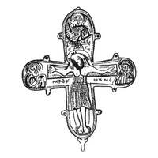
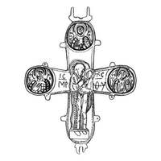

Catalog › CE-1045 · KOR2003-III.1.1.71
Encolpion întreg cu inel ulterior cu Mântuitorul Nefăcut de mână omenească, relief și niello cu detalii finisate
sec. mijlocul XII (1101–1200) · loc necunoscut · Muzeul Rus de Stat, Sankt Petersburg (GRM), inv. № ДР/М 1500 (4149)
double-sided reliquary cross (enkolpion), aramă; c. mijlocul XII (1101–1200); find spot unknown; kept at Muzeul Rus de Stat, Sankt Petersburg (GRM).




Identificare
- Categorie
- Encolpion bivalv (relicvar)
- Material
- Aramă
- Tehnică
- Turnare în relief; Gravare (incizie); Niello
- Stare
- Întreagă
- Dimensiuni
- Î 110 × L 97 mm
Iconografie
- Descriere avers
- Encolpion întreg cu inel de agățare ulterior pe care este reprezentat Mântuitorul Nefăcut de mână omenească; pe valva de față pierdută balamaua de sus. Pe ambele valve, și imaginile reliefate, și cele în niello sunt prelucrate în detaliu cu dalta.
- Descriere revers
- Pe valva de revers este deteriorată balamaua dreaptă de jos.
- Inscripții
- МР ΘҮ; НЪНО; ГО РЄГН; IC XC/МР ΘҮ; ПВ ЛО; ПТ РО; ННКО ЛА
- Limba
- Slavonă
Datare și atribuire
- Datare
- sec. mijlocul XII (1101–1200)
- Centru
- Necunoscut
- Tipologie
- Korzukhina–Peskova 2003, tip III 1 1
Descoperire
- Context
- Colecție (fără context)
Păstrare și referințe
- Colecție
- Muzeul Rus de Stat, Sankt Petersburg (GRM)
- Nr. inventar
- № ДР/М 1500 (4149)
- Bibliografie
- G. F. Korzukhina, A. A. Peskova, Древнерусские энколпионы. Нагрудные кресты-реликварии XI–XIII вв., Sankt-Petersburg, 2003 [Korzukhina–Peskova 2003], p. 109, cat. nr. III 1 1/71, reprodusă la Табл. 48 (planșe, p. 290). Bibliografie citată în sursă: Корзухина, архив ф. 77, д. 15, л. 39, 40.
- Figura
- Табл. 48
- Planșe
- Korzukhina–Peskova 2003, Табл. 48 (planșă fără paginație proprie în PDF; p. 290 tipărită)
- Observații
- Datare după Peskova: sec. mijlocul XII. Inscripții adâncite: pe față sub mâinile lui Hristos МР ΘҮ, НЪНО, sub medalionul de sus ГО РЄГН; pe revers pe laturile figurii Maicii Domnului IC XC/МР ΘҮ, în medalioane ПВ ЛО, ПТ РО, ННКО ЛА. Desen: G. F. Korzuhina. Inscripții mixte: formule grecești și nume slavone, unele stilizate sau stricate. Coordonate: nu sunt date în sursă.
Citare: Corpus Encolpiorum, CE-1045, Encolpion întreg cu inel ulterior cu Mântuitorul Nefăcut de mână omenească, relief și niello cu detalii finisate, --root/piese/KOR2003-III.1.1.71/ (accesat 2026-10-17).